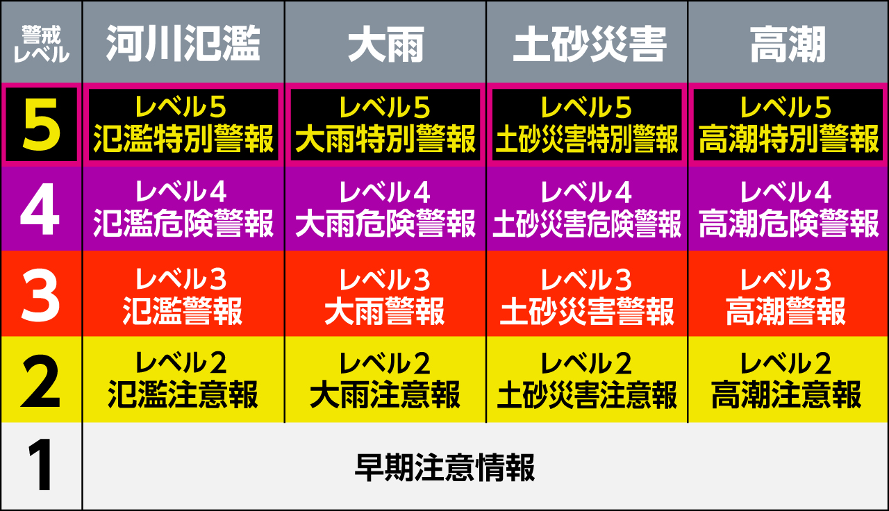
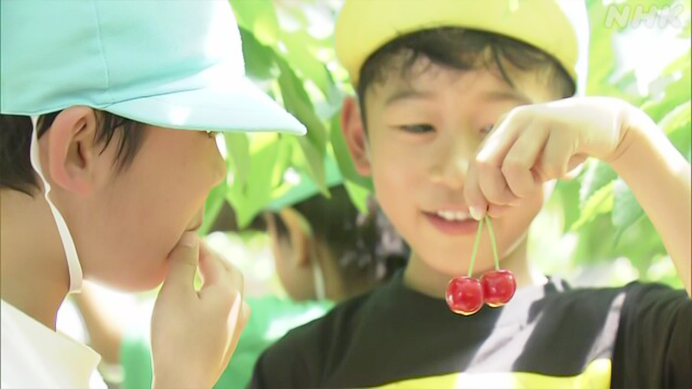

最新ニュース
1️⃣ 災害のときの新しい情報 28日から始まった

たくさんの雨などで災害の心配があるとき、警報や注意報が出ます。
気象庁などは、28日から危険を知らせる情報を新しくしました。もっとわかりやすく伝えるためです。
情報は、4つの災害のとき知らせます。川の水があふれそうなときや、たくさん雨が降って水が家などに入るときです。そして山がくずれそうなときや、台風で海の水の高さが上がるときです。
4つの災害が、どのくらい危険なのか、5つのレベルで知らせます。
いちばん危険なレベル5は「特別警報」です。
次に危険なレベル4は「危険警報」です。
レベル3は「警報」で、レベル2は「注意報」です。
専門家は、住んでいる場所や会社がある場所が、どのような災害の情報に気をつけなければいけないか、「ハザードマップ」でチェックしてほしいと話しています。
2️⃣ デジタル化に慣れなくて困るという川柳が多かった
川柳のニュースです。
川柳は日本の短い詩のひとつです。自分の気持ちや周りで起こったおもしろいことを、短いことばで言います。
コンクールには5万4000の川柳が集まりました。
1位の川柳は、「キャッシュレス 充電無くなり 無一文」です。
無一文は、お金がない、という意味です。スマートフォンでお金を払おうとしたら、充電がなくなっていて払うことができなかったという川柳です。
ほかにも、インターネットなどが中心の世界になる「デジタル化」に慣れなくて困るという川柳が多かったです。
3️⃣ 赤ちゃんと一緒に美術館を楽しむことができた
東京の港区にある美術館で、赤ちゃんと一緒に楽しむイベントがありました。
赤ちゃんが泣くとほかの客が困ると思って、美術館に行くのを遠慮している人がいます。
東京都庭園美術館では、赤ちゃんと一緒に楽しむイベントを1年に4回行っています。
27日は、赤ちゃんと一緒の家族は、ベビーカーのまま中に入ることができました。
会場に来た人たちは、赤ちゃんが泣いても慌てないでゆっくりと見ていました。
1歳の子どもを連れた女性は「きょうは周りにも小さい子どもがいたので、遠慮しないで見ることができました。いい時間でした」と話していました。
4️⃣ 山形県寒河江市 「さくらんぼ狩り」が始まった

山形県は、さくらんぼが日本でいちばん多くとれます。
寒河江市の農園では、客がさくらんぼをとって楽しむ「さくらんぼ狩り」ができます。今年は27日から、始まりました。
農園に来た保育園の子どもたちは、赤くなったさくらんぼをとって、おいしそうに食べていました。
農家の人は「ことしは、大きくて甘いさくらんぼができました」と話しています。
寒河江市の「さくらんぼ狩り」は、6月の終わりごろまで、楽しむことができます。
- 〜がある / 〜がいる
- 〜など
- 使役 (〜させる / 〜せる)
- 〜から
- 〜ため
- 〜やすい
- 〜ず / 〜ずに
- 〜くらい / 〜ぐらい
- 〜なければいけない
- 〜ような
- 〜いけない
- 〜ている / 〜でいる
- 〜こと
- 〜という
- 〜ことができる
- 〜なくて
- 〜になる
- 〜中
- 〜ないで
- 〜ても / 〜でも
- 〜ので
- 〜てみる
- 〜まで
vebaev.github.io
Generated: 2026-05-28 12:28:15 UTC